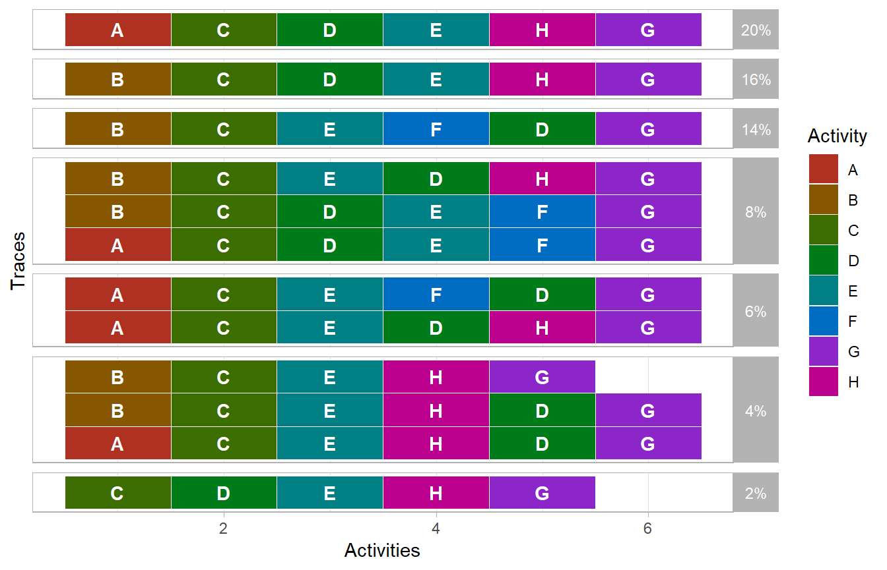

library(propro)
library(bupaR)
library(petrinetR)This document introduces propro, an R-package for constructing probabilistic process models using Bayesian inference and MCMC. In this illustration, we will use the following event log.
log <- log_2_paper_ICPM
log %>%
trace_explorer(coverage = 1)
Furthermore, we will use the following model.
net <- model_2_paper_ICPM
net$final_marking <- "p8"
render_PN(net)Constructing a process model strats with the create_propro function
create_propro(log, net) -> propro
#> Joining, by = "trace"
#> Joining, by = c("from_state", "to_state")
#> Joining, by = c("from_state", "to_state")
#> Joining, by = c("from_state", "to_state")
#> Joining, by = "trace"Which we can view by printing it
print_propro(propro)
#> model{
#>
#> y[1:12] ~ dmulti(theta[1:12], N)
#>
#> theta[1] <- beta_f*beta[2]*beta[13]*beta[18]
#> theta[2] <- beta_f*beta[2]*beta[13]*beta[17]
#> theta[3] <- beta_f*beta[2]*beta[13]*beta[16]*beta[20]
#> theta[4] <- beta_f*beta[2]*beta[12]*beta[15]
#> theta[5] <- beta_f*beta[2]*beta[12]*beta[14]
#> theta[6] <- beta_f*beta[1]*beta[4]*beta[9]
#> theta[7] <- beta_f*beta[1]*beta[4]*beta[8]
#> theta[8] <- beta_f*beta[1]*beta[4]*beta[7]*beta[11]
#> theta[9] <- beta_f*beta[1]*beta[3]*beta[6]
#> theta[10] <- beta_f*beta[1]*beta[3]*beta[5]
#> theta[11] <- (1-beta_f)
#> theta[12] <- beta_f*beta[2]*beta[13]*beta[16]*beta[19] + beta[1]*beta[4]*beta[7]*beta[10]
#>
#> beta[1]
#> beta[2]
#> beta[3]
#> beta[4]
#> beta[5]
#> beta[6]
#> beta[7]
#> beta[8]
#> beta[9]
#> beta[10]
#> beta[11]
#> beta[12]
#> beta[13]
#> beta[14]
#> beta[15]
#> beta[16]
#> beta[17]
#> beta[18]
#> beta[19]
#> beta[20]
#> beta_f
#>
#> }In order to see what the different beta’s refer to, we can plot the underlying automaton
plot_automaton(propro)We now have to specify the priors. Let’s start by automatically setting to complements of all splits which have two options.
propro %>%
set_prior_complements(n = 2) %>%
list_priors()
#> Joining, by = "choice_id"
#> # A tibble: 21 x 3
#> prior choice_id specification
#> <chr> <int> <chr>
#> 1 beta[1] 1 <NA>
#> 2 beta[2] 1 <- 1 - (beta[1])
#> 3 beta[3] 2 <NA>
#> 4 beta[4] 2 <- 1 - (beta[3])
#> 5 beta[5] 3 <NA>
#> 6 beta[6] 3 <- 1 - (beta[5])
#> 7 beta[7] 4 <NA>
#> 8 beta[8] 4 <NA>
#> 9 beta[9] 4 <NA>
#> 10 beta[10] 5 <NA>
#> # ... with 11 more rowsFurthermore, we can see that the some probabilities should be the same if we interpret the petri net strictly. We therefor implement the following constraints.
beta 3 = beta 12 beta 5 = beta 10 = beta 14 = beta 19 beta 8 = beta 17 beta 7 = beta 16 beta 9 = beta 18
propro %>%
set_prior_complements(n = 2) %>%
set_prior("beta[12]", "<- beta[3]")%>%
set_prior("beta[10]", "<- beta[5]")%>%
set_prior("beta[14]", "<- beta[5]")%>%
set_prior("beta[19]", "<- beta[5]")%>%
set_prior("beta[17]", "<- beta[8]")%>%
set_prior("beta[16]", "<- beta[7]")%>%
set_prior("beta[18]", "<- beta[9]") %>%
list_priors
#> Joining, by = "choice_id"
#> # A tibble: 21 x 3
#> prior choice_id specification
#> <chr> <int> <chr>
#> 1 beta[1] 1 <NA>
#> 2 beta[2] 1 <- 1 - (beta[1])
#> 3 beta[3] 2 <NA>
#> 4 beta[4] 2 <- 1 - (beta[3])
#> 5 beta[5] 3 <NA>
#> 6 beta[6] 3 <- 1 - (beta[5])
#> 7 beta[7] 4 <NA>
#> 8 beta[8] 4 <NA>
#> 9 beta[9] 4 <NA>
#> 10 beta[10] 5 <- beta[5]
#> # ... with 11 more rowsNow we can define the remain priors. For beta 7,8 and 9, we will use a Dirichlet distributions. Therefore, we first combine these into one prior specification. Then we define the distribution and add alpha to the data.
propro %>%
set_prior_complements(n = 2) %>%
set_prior("beta[12]", "<- beta[3]")%>%
set_prior("beta[10]", "<- beta[5]")%>%
set_prior("beta[14]", "<- beta[5]")%>%
set_prior("beta[19]", "<- beta[5]")%>%
set_prior("beta[17]", "<- beta[8]")%>%
set_prior("beta[16]", "<- beta[7]")%>%
set_prior("beta[18]", "<- beta[9]") %>%
combine_consecutive_priors(start = 7, end = 9) %>%
set_prior("beta[7:9]", "<- ddirich(alpha[1:3])") %>%
add_data("alpha", c(1,1,1)) %>%
list_priors
#> Joining, by = "choice_id"
#> # A tibble: 19 x 4
#> prior choice_id specification nr
#> <chr> <int> <chr> <dbl>
#> 1 beta[1] 1 <NA> 1
#> 2 beta[2] 1 <- 1 - (beta[1]) 2
#> 3 beta[3] 2 <NA> 3
#> 4 beta[4] 2 <- 1 - (beta[3]) 4
#> 5 beta[5] 3 <NA> 5
#> 6 beta[6] 3 <- 1 - (beta[5]) 6
#> 7 beta[10] 5 <- beta[5] 10
#> 8 beta[11] 5 <- 1 - (beta[10]) 11
#> 9 beta[12] 6 <- beta[3] 12
#> 10 beta[13] 6 <- 1 - (beta[12]) 13
#> 11 beta[14] 7 <- beta[5] 14
#> 12 beta[15] 7 <- 1 - (beta[14]) 15
#> 13 beta[16] 8 <- beta[7] 16
#> 14 beta[17] 8 <- beta[8] 17
#> 15 beta[18] 8 <- beta[9] 18
#> 16 beta[19] 9 <- beta[5] 19
#> 17 beta[20] 9 <- 1 - (beta[19]) 20
#> 18 beta_f NA <NA> NA
#> 19 beta[7:9] NA <- ddirich(alpha[1:3]) NAAll remaining priors we will set to beta distribution with paramters a = 1 and b = 1.
propro %>%
set_prior_complements(n = 2) %>%
set_prior("beta[12]", "<- beta[3]")%>%
set_prior("beta[10]", "<- beta[5]")%>%
set_prior("beta[14]", "<- beta[5]")%>%
set_prior("beta[19]", "<- beta[5]")%>%
set_prior("beta[17]", "<- beta[8]")%>%
set_prior("beta[16]", "<- beta[7]")%>%
set_prior("beta[18]", "<- beta[9]") %>%
combine_consecutive_priors(start = 7, end = 9) %>%
set_prior("beta[7:9]", "~ddirich(alpha[1:3])") %>%
add_data("alpha", c(1,1,1)) %>%
set_prior("beta[1]", "~dbeta(1,1)")%>%
set_prior("beta[3]", "~dbeta(1,1)")%>%
set_prior("beta[5]", "~dbeta(1,1)")%>%
set_prior("beta_f", "~dbeta(1,1)") %>%
list_priors()
#> Joining, by = "choice_id"
#> # A tibble: 19 x 4
#> prior choice_id specification nr
#> <chr> <int> <chr> <dbl>
#> 1 beta[1] 1 ~dbeta(1,1) 1
#> 2 beta[2] 1 <- 1 - (beta[1]) 2
#> 3 beta[3] 2 ~dbeta(1,1) 3
#> 4 beta[4] 2 <- 1 - (beta[3]) 4
#> 5 beta[5] 3 ~dbeta(1,1) 5
#> 6 beta[6] 3 <- 1 - (beta[5]) 6
#> 7 beta[10] 5 <- beta[5] 10
#> 8 beta[11] 5 <- 1 - (beta[10]) 11
#> 9 beta[12] 6 <- beta[3] 12
#> 10 beta[13] 6 <- 1 - (beta[12]) 13
#> 11 beta[14] 7 <- beta[5] 14
#> 12 beta[15] 7 <- 1 - (beta[14]) 15
#> 13 beta[16] 8 <- beta[7] 16
#> 14 beta[17] 8 <- beta[8] 17
#> 15 beta[18] 8 <- beta[9] 18
#> 16 beta[19] 9 <- beta[5] 19
#> 17 beta[20] 9 <- 1 - (beta[19]) 20
#> 18 beta_f NA ~dbeta(1,1) NA
#> 19 beta[7:9] NA ~ddirich(alpha[1:3]) NAFinally, let’s add additional variable. For example, a delta which compares beta[5] with beta[8]. Then we save the propro model.
propro %>%
set_prior_complements(n = 2) %>%
set_prior("beta[12]", "<- beta[3]")%>%
set_prior("beta[10]", "<- beta[5]")%>%
set_prior("beta[14]", "<- beta[5]")%>%
set_prior("beta[19]", "<- beta[5]")%>%
set_prior("beta[17]", "<- beta[8]")%>%
set_prior("beta[16]", "<- beta[7]")%>%
set_prior("beta[18]", "<- beta[9]") %>%
combine_consecutive_priors(start = 7, end = 9) %>%
set_prior("beta[7:9]", "~ddirich(alpha[1:3])") %>%
add_data("alpha", c(1,1,1)) %>%
set_prior("beta[1]", "~dbeta(1,1)")%>%
set_prior("beta[3]", "~dbeta(1,1)")%>%
set_prior("beta[5]", "~dbeta(1,1)")%>%
set_prior("beta_f", "~dbeta(1,1)") %>%
add_variable("delta[1]", "<- beta[5] - beta[9]") -> propro
#> Joining, by = "choice_id"The final models looks as follows.
propro %>%
print_propro()
#> model{
#>
#> y[1:12] ~ dmulti(theta[1:12], N)
#>
#> theta[1] <- beta_f*beta[2]*beta[13]*beta[18]
#> theta[2] <- beta_f*beta[2]*beta[13]*beta[17]
#> theta[3] <- beta_f*beta[2]*beta[13]*beta[16]*beta[20]
#> theta[4] <- beta_f*beta[2]*beta[12]*beta[15]
#> theta[5] <- beta_f*beta[2]*beta[12]*beta[14]
#> theta[6] <- beta_f*beta[1]*beta[4]*beta[9]
#> theta[7] <- beta_f*beta[1]*beta[4]*beta[8]
#> theta[8] <- beta_f*beta[1]*beta[4]*beta[7]*beta[11]
#> theta[9] <- beta_f*beta[1]*beta[3]*beta[6]
#> theta[10] <- beta_f*beta[1]*beta[3]*beta[5]
#> theta[11] <- (1-beta_f)
#> theta[12] <- beta_f*beta[2]*beta[13]*beta[16]*beta[19] + beta[1]*beta[4]*beta[7]*beta[10]
#>
#> beta[1] ~dbeta(1,1)
#> beta[2] <- 1 - (beta[1])
#> beta[3] ~dbeta(1,1)
#> beta[4] <- 1 - (beta[3])
#> beta[5] ~dbeta(1,1)
#> beta[6] <- 1 - (beta[5])
#> beta[10] <- beta[5]
#> beta[11] <- 1 - (beta[10])
#> beta[12] <- beta[3]
#> beta[13] <- 1 - (beta[12])
#> beta[14] <- beta[5]
#> beta[15] <- 1 - (beta[14])
#> beta[16] <- beta[7]
#> beta[17] <- beta[8]
#> beta[18] <- beta[9]
#> beta[19] <- beta[5]
#> beta[20] <- 1 - (beta[19])
#> beta_f ~dbeta(1,1)
#> beta[7:9] ~ddirich(alpha[1:3])
#>
#> delta[1] <- beta[5] - beta[9]
#>
#>
#> }We can now run the model, after writing it to a file.
propro %>%
write_propro("propro_model2.txt") %>%
run_propro(n.chains = 2, n.iter = 40000, n.burnin = 1000)
#> Compiling model graph
#> Resolving undeclared variables
#> Allocating nodes
#> Graph information:
#> Observed stochastic nodes: 1
#> Unobserved stochastic nodes: 5
#> Total graph size: 34
#>
#> Initializing model
#> Inference for Bugs model at "propro_model2.txt", fit using jags,
#> 2 chains, each with 40000 iterations (first 1000 discarded), n.thin = 39
#> n.sims = 2000 iterations saved
#> mu.vect sd.vect 2.5% 25% 50% 75% 97.5% Rhat n.eff
#> beta[10] 0.258 0.074 0.130 0.206 0.253 0.306 0.411 1.004 380
#> beta[11] 0.742 0.074 0.589 0.694 0.747 0.794 0.870 1.007 300
#> beta[12] 0.553 0.072 0.410 0.503 0.553 0.603 0.691 1.001 2000
#> beta[13] 0.447 0.072 0.309 0.397 0.447 0.497 0.590 1.001 2000
#> beta[14] 0.258 0.074 0.130 0.206 0.253 0.306 0.411 1.004 380
#> beta[15] 0.742 0.074 0.589 0.694 0.747 0.794 0.870 1.007 300
#> beta[16] 0.328 0.093 0.161 0.260 0.324 0.391 0.517 1.001 2000
#> beta[17] 0.461 0.099 0.271 0.393 0.458 0.529 0.659 1.001 2000
#> beta[18] 0.211 0.082 0.077 0.151 0.203 0.262 0.392 1.001 2000
#> beta[19] 0.258 0.074 0.130 0.206 0.253 0.306 0.411 1.004 380
#> beta[1] 0.471 0.070 0.340 0.424 0.470 0.517 0.610 1.001 2000
#> beta[20] 0.742 0.074 0.589 0.694 0.747 0.794 0.870 1.007 300
#> beta[2] 0.529 0.070 0.390 0.483 0.530 0.576 0.660 1.001 2000
#> beta[3] 0.553 0.072 0.410 0.503 0.553 0.603 0.691 1.001 2000
#> beta[4] 0.447 0.072 0.309 0.397 0.447 0.497 0.590 1.001 2000
#> beta[5] 0.258 0.074 0.130 0.206 0.253 0.306 0.411 1.004 380
#> beta[6] 0.742 0.074 0.589 0.694 0.747 0.794 0.870 1.007 300
#> beta[7] 0.328 0.093 0.161 0.260 0.324 0.391 0.517 1.001 2000
#> beta[8] 0.461 0.099 0.271 0.393 0.458 0.529 0.659 1.001 2000
#> beta[9] 0.211 0.082 0.077 0.151 0.203 0.262 0.392 1.001 2000
#> beta_f 0.924 0.036 0.838 0.903 0.930 0.950 0.978 1.001 2000
#> delta[1] 0.046 0.114 -0.187 -0.026 0.049 0.123 0.261 1.001 1700
#> theta[10] 0.062 0.022 0.027 0.046 0.059 0.075 0.113 1.003 700
#> theta[11] 0.076 0.036 0.022 0.050 0.070 0.097 0.162 1.001 2000
#> theta[12] 0.036 0.016 0.012 0.024 0.034 0.046 0.075 1.002 1000
#> theta[1] 0.046 0.020 0.016 0.031 0.043 0.058 0.092 1.001 2000
#> theta[2] 0.101 0.031 0.049 0.078 0.098 0.121 0.167 1.002 2000
#> theta[3] 0.053 0.020 0.021 0.038 0.051 0.065 0.100 1.001 2000
#> theta[4] 0.201 0.044 0.125 0.169 0.198 0.228 0.295 1.002 1100
#> theta[5] 0.069 0.024 0.031 0.053 0.066 0.083 0.125 1.003 550
#> theta[6] 0.041 0.019 0.013 0.027 0.038 0.052 0.084 1.001 2000
#> theta[7] 0.090 0.028 0.043 0.070 0.087 0.107 0.155 1.001 2000
#> theta[8] 0.047 0.018 0.019 0.034 0.045 0.058 0.088 1.002 2000
#> theta[9] 0.179 0.040 0.109 0.149 0.177 0.205 0.260 1.002 910
#> deviance 42.317 3.241 37.780 39.874 41.745 43.999 50.302 1.002 1100
#>
#> For each parameter, n.eff is a crude measure of effective sample size,
#> and Rhat is the potential scale reduction factor (at convergence, Rhat=1).
#>
#> DIC info (using the rule, pD = var(deviance)/2)
#> pD = 5.2 and DIC = 47.6
#> DIC is an estimate of expected predictive error (lower deviance is better).